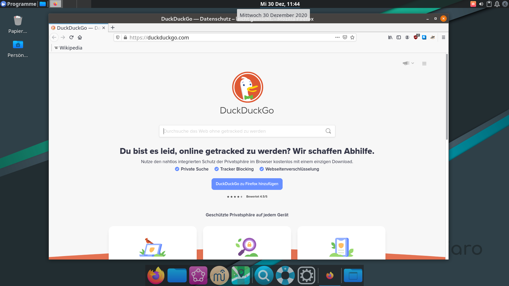

So suchst du nach Informationen im Internet
Webbrowser
- Ein Webbrowser ist ein Programm, das Webseiten laden und anzeigen kann. Es gibt viele unterschiedliche Webbrowser: Internet Explorer, Google Chrome, Microsoft Edge, Opera und viele weitere. Wir verwenden Firefox. Alternativ kannst du auch Midori nutzen.
- Den Webbrowser öffnen
- Über die Appleiste: klicke auf das Symbol mit dem Fuchs (öffnet Firefox)
- Über das Menü: Öffne das Appsmenü (oben links) und klicke auf Webbrowser oder auf "Internet" -> "Firefox"
- Über die Appsuche: Drücke Supertaste und R und beginne zu tippen: "Firefox"/"Browser"/"Internet". Sobald der richtige Eintrag erscheint, drücke Enter
- Im Internet suchen: du kannst entweder über die obere oder über Suchleiste auf der Startseite suchen. Als Suchmaschine ist Duckduckgo voreingestellt, da andere Suchmaschinen viele Daten über ihre Nutzer sammeln
- Zwischen den Tabs wechseln: du kannst oben zwischen den geöffneten Webseiten wechseln.
- So sieht der Webbrowser aus:
